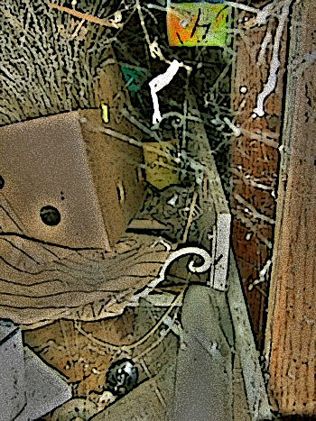

Crawl Space
by Dennis Loney
1.
For fear of what I might find there, for fear
alone — that trembling companion squirreled deep
down in the crawl space. For it once was here,
as natural as a limb before the creep
of foreign tongues licked at my ears and sheer
delight hobbled my sense. For fear the steep
set of stairs descended and I would descend
with it. For fear, my friend, of the tenuis end.
That, the easiest path. Those lightning minds
that climbed from interred sleep and shattered the pact,
illumined a naked thought — the thing that binds
the fact of matter to the matter of fact….
Do you hear? They are here among us, speaking. The blinds
are drawn and redrawn, a burning crease shellacked.
There are fragments on the stairs and I descend
with them, in fear (or hope) that they will end.
A grazing mist tugs at my back. A chill
deceives a well-placed step and steals the shock
of impact. Does the mind remember fleeting will,
the body lost blood, or will the splintered clock
recall the time it kept now that it’s still?
I’ve not forgotten you. This simple lock
corroded long ago and falls to dust
with a well-aimed breath — the inviting door must….
2.
No rats disperse beneath the planks; no bats
design translucent arcs, signaling change,
but cymbals flood the band of light, high hats
in tow. A naked bulb still lights a fixed range,
and ashes and earth collect all things. The cats
I’d grown to love are stuffed (improved from the mange)
and civilly propped in sprung poses below
a snapshot mobile, dead faces twisting so slow.
This space is crammed with busy voices, rows
of roses tagged with unfamiliar hair,
exhausted shotgun shells, discarded clothes,
all utterances of self-worth and despair.
A polished steel box tied with razor blade bows
is guarded by a ring of misplaced prayer.
A shadow tumbles back into the wall,
amazed that I was able to move at all.
But over there a mattress, indented, soiled
with scattered leaves and bound by leaden tomes,
their corners carefully creased, as if one toiled
infinite nights siphoning thought from poems
the world would never see, siphoning oiled
associations whose thinning echo still roams
to greet receptive ears and disconnect
their streaming thoughts with a prying dialect.
3.
And tucked behind a bureau of receipts,
a naked creature lies, its mouth sewn shut,
emaciated from thought and bruised from deceits
that have gathered currency, bypassing the glut
of filtered tears. It wags its toe through the beats
it’s forced to hear, wipes spittle from the cut
below its lips and thinks but none of this
is mine — a history we can’t dismiss….
I have not forgotten you, my naked friend,
but you are what I fear: the coal-hard thought
that could ignite and dress me for the end.
Why must I chance this living flesh to the rot
of the sudden earth? Why must you always send
me to darker planes? If it were joy I sought,
I’d never come at all, but patiently wait
in borrowed clothes at the arrivals gate.
But here I am — unclothed, exposing the scars
from prior dates — with a promise not to flee.
Consume me if you want; fasten the bars;
let all I’ve gathered burn. The nearing sea
doesn’t worry about the shore; nor failing stars
the fate of its light: it’s all a gas, you see,
the elemental parts at the costume ball
beholden to shapes they did not want at all.

 |
|